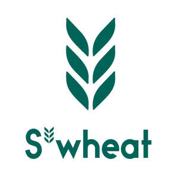

Trade Mark Journal No.2025/026 27 June 2025
UK00004219586 16 June 2025 (21)

- Class 21
- Bottles; Plastic bottles; Water bottles; Vacuum bottles; Aluminum water bottles; Bottles; Biodegradable Bottles, sold empty; Plastic water bottles; Insulated vacuum bottles; Insulated bottles [flasks]; Sports bottles [empty]; Water bottles for bicycles; Aluminum water bottles, empty; Shaker bottles sold empty; Plastic water bottles [empty]; Vacuum bottles [insulated flasks]; Sports bottles sold empty; Water bottles sold empty; Drinking bottles for sports; Reusable stainless steel water bottles; Empty water bottles for bicycles; Water bottles for bicycles, sold empty; Reusable plastic water bottles sold empty; Reusable stainless steel water bottles sold empty; Flasks; Vacuum flasks; Drinking flasks; Insulated flasks; Glass flasks; Hip flasks; Insulating flasks; Flasks for travellers; Glass flasks [containers]; Drinking flasks for travellers; Flasks for travellers (Drinking -); Vacuum flasks for holding food; Vacuum flasks for holding drinks; Insulated flasks for household use; Thermally insulated flasks for household use; Mugs; Travel mugs; Glass mugs; Coffee mugs; Cups and mugs; Mugs made of plastic; Tumblers; Tumblers [drinking vessels]; Tumblers for use as drinking glasses; Cups; Biodegradable cups; Sippy cups; Tea cups; Drinking cups; Feeding cups; Coffee cups; Glass cups; Drinking cups [not of precious metal]; Training cups for babies and children; Insulating sleeve holder for beverage cups; Drinks containers; Drinking receptacles; Drinking glasses; Drinking vessels; Drinking straws; Glasses [drinking vessels]; Straws for drinking; Beverageware; Beverage glassware; Containers for beverages; Portable beverage coolers; Portable beverage dispensers; Beverage coolers [containers]; Portable beverage container holders; containers for food; Biodegradable container.
Yaia Limited